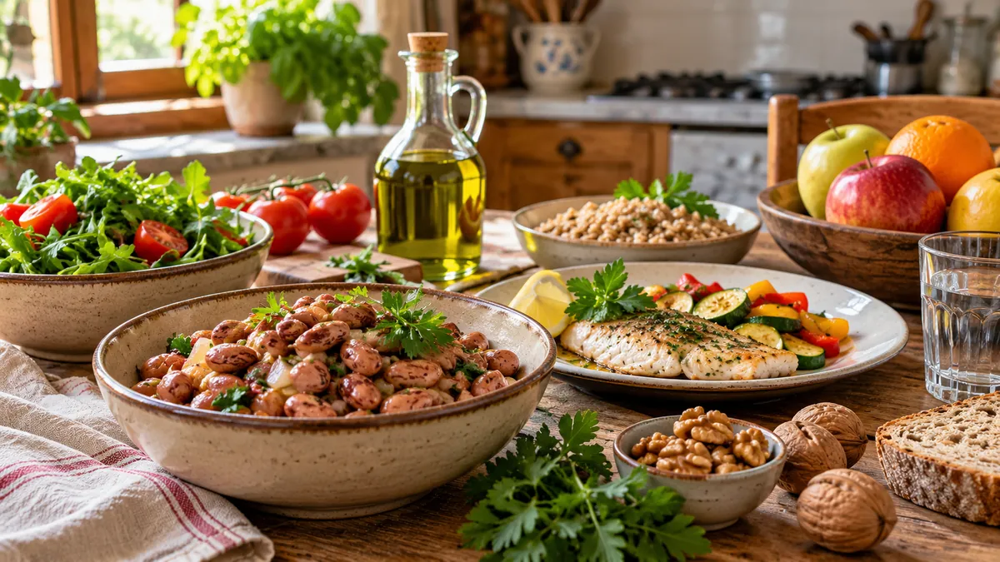

RUBRICA 08 · GUIDA 01 · NAZIONALE · AGGIORNATA IL 23 OTTOBRE 2026
Dieta mediterranea e diabete tipo 2: che cosa sappiamo davvero
La dieta mediterranea non è un farmaco miracoloso. È un modello alimentare sostenuto da evidenze utili soprattutto per la salute cardiovascolare e il metabolismo del glucosio. Vediamo quali risultati sono documentati, cosa significa nella vita quotidiana e quali scelte richiedono una valutazione personale.

Questa guida è divulgativa. Non suggerisce di sospendere medicine, modificare insulina o cambiare da soli il piano alimentare in caso di diabete, malattie cardiovascolari o renali. Il programma nutrizionale va adattato alle condizioni cliniche, alle possibilità economiche e alle abitudini di ciascuno.
1. Che cosa significa davvero «dieta mediterranea»?
Non è un piatto speciale né una lista di cibi da mangiare tutti i giorni. È un modello complessivo: più verdura, legumi, frutta, cereali preferibilmente integrali, noci e semi; olio d'oliva come principale grasso da condimento; pesce secondo abitudini e disponibilità; attenzione alle quantità e minore ricorso a bevande zuccherate, carni lavorate, dolci e prodotti molto raffinati.
Le Linee guida italiane CREA sottolineano varietà e modello nel suo insieme. Nessun singolo alimento è sufficiente da solo a garantire benefici. Pasta, pane, patate e legumi possono rientrare nel percorso: le quantità dipendono dal contesto personale.
2. Quali benefici sono sostenuti dalle prove?
Gli Standards of Care in Diabetes 2026 dell'American Diabetes Association (ADA), raccomandazione 5.30, invitano a considerare elementi del modello mediterraneo nell'alimentazione di persone con diabete o a rischio: per ridurre il rischio cardiovascolare (grado di evidenza A) e migliorare il metabolismo del glucosio (grado B). Il grado di evidenza non è la promessa che ogni individuo otterrà lo stesso risultato.
La stessa fonte specifica che diversi modelli alimentari possono essere adatti e che non esiste una percentuale di carboidrati, grassi e proteine ideale per tutti. La raccomandazione 5.10 dà rilievo alla terapia nutrizionale medica individualizzata, svolta con professionisti competenti.
Che cosa non significa? Non significa guarigione certa del diabete, eliminazione automatica di farmaci o prevenzione garantita di un infarto. Gli studi aiutano a valutare benefici medi e rischi; il controllo delle condizioni personali resta essenziale.
3. Un modo semplice per riconoscere il modello
- Verdure: variarne tipi, colori e preparazioni; fresche, surgelate o in conserva con poco sale possono essere utili.
- Legumi: fagioli, ceci, lenticchie e piselli apportano carboidrati, proteine vegetali e fibra. Non sono alimenti «senza carboidrati».
- Cereali: pane, pasta, riso e altri cereali, preferibilmente integrali quando tollerati, possono far parte dei pasti. Integrale non significa «senza effetto sulla glicemia».
- Grassi: olio extravergine d'oliva, frutta secca e semi possono sostituire in parte grassi meno favorevoli; restano alimenti energetici e le quantità contano.
- Pesce e altre proteine: scegliere varietà e modalità di cottura semplici, evitando di considerare il singolo alimento una cura.
- Bevande: preferire l'acqua; limitare le bevande con zuccheri aggiunti.
4. Se hai il diabete, i carboidrati richiedono attenzione
Legumi, pasta, pane, patate, riso e frutta contengono quantità diverse di carboidrati. Una dieta mediterranea non elimina il bisogno di considerare le quantità, soprattutto quando il trattamento comprende insulina ai pasti. Un cambiamento importante nella quantità di carboidrati può modificare la glicemia e, per chi usa alcuni farmaci, aumentare il rischio di ipoglicemia se la terapia non viene rivalutata.
Per questo gli Standards ADA 2026 (raccomandazioni 5.27–5.28) richiamano l'educazione all'effetto dei nutrienti sulla glicemia e, con dosi fisse d'insulina, la necessità di una certa regolarità nella quantità e negli orari dei carboidrati, da personalizzare. Non cambiare autonomamente dosi o piani terapeutici sulla base di un esempio trovato online.
Per approfondire il metodo senza prescrizioni individuali puoi leggere Diabete tipo 2 — Guida 04: alimentazione e carboidrati.
5. Esempio per capire, non un menù prescritto
Immagina un pranzo con verdure, fagioli, una porzione di cereali e olio d'oliva. Questo insieme può ricordare un pasto mediterraneo; ma non possiamo dire quanti grammi siano giusti per te senza conoscere fabbisogno, terapia, glicemia, eventuale insufficienza renale e attività quotidiana.
Nemmeno la fotografia di questa guida indica quanto mangiare. Le immagini servono a riconoscere gli alimenti, non a calcolare calorie o carboidrati.
6. E se il budget è limitato?
La qualità dell'alimentazione non dovrebbe dipendere dall'acquisto di prodotti costosi con la parola «mediterraneo» in etichetta. In base alle offerte reali e alla capacità di conservarli, può essere utile confrontare legumi secchi e in conserva, ortaggi di stagione e surgelati, diversi cereali e il prezzo al litro dell'olio d'oliva.
Per confrontare i costi, annota il prezzo e il peso effettivamente consumabile. Non ci sono qui prezzi nazionali inventati: i costi cambiano per negozio, luogo e data. Per il metodo di spesa consulta Dieta mediterranea: costo reale del cibo.
7. Un piccolo esercizio di comprensione
Un messaggio afferma: «La dieta mediterranea è il primo farmaco contro il diabete: se la segui puoi smettere i medicinali». Qual è l'errore?
Mostra la spiegazione
La frase trasforma un modello alimentare utile in una terapia farmacologica e promette un risultato non dimostrato. La dieta è parte importante della cura, ma non autorizza a interrompere i farmaci. Le scelte personali spettano a paziente e curanti.
Seconda domanda: i fagioli sono privi di carboidrati perché sono legumi?
Mostra la spiegazione
No. I legumi contengono anche carboidrati, oltre a proteine vegetali e fibre. La loro quantità va considerata nel piano alimentare, se necessario con un professionista.
8. Tre domande utili da portare al dietista o al medico
- Quali abitudini mediterranee sono più adatte alla mia situazione e al mio budget?
- Come valutiamo le quantità di carboidrati rispetto alla terapia che assumo?
- Che cosa devo osservare nel tempo per verificare che il cambiamento sia sostenibile e sicuro?
Se assumi insulina, hai ipoglicemie, insufficienza renale, fragilità, problemi di deglutizione o perdita di peso involontaria, evita di applicare porzioni standard. Rivolgiti ai curanti per adattare qualità e quantità dei pasti. In presenza di sintomi acuti o gravi non affidarti a questa pagina.
Fonti scientifiche e limiti
Verifica documentale del 23 ottobre 2026. I riferimenti sostengono principi generali, non una prescrizione personalizzata. Non è stata effettuata una validazione clinica esterna indipendente di questa guida, né una prova con lettori reali.
- American Diabetes Association — Standards of Care in Diabetes 2026, sezione 5: raccomandazioni 5.10, 5.14, 5.27–5.30 e assenza di un unico rapporto ideale di macronutrienti.
- CREA — Linee guida per una sana alimentazione: modello mediterraneo, varietà e priorità del modello complessivo.
- Ministero della Salute — Linee guida per una sana alimentazione: riferimento istituzionale italiano.
- Per Me — Metodo e responsabilità editoriali.
Torna alla rubrica Dieta mediterranea scientifica
Vai alla pagina Facebook di Per Me per scrivere
Non pubblicare informazioni sanitarie, password o documenti personali nei commenti pubblici.